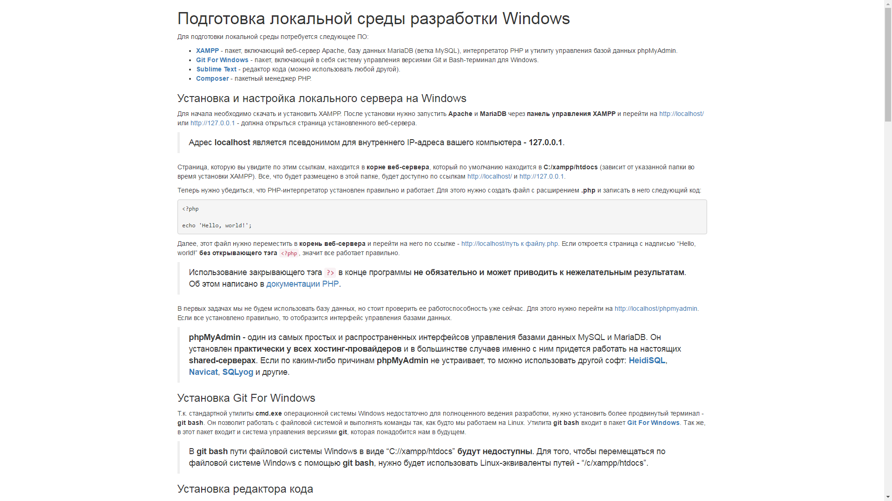

Для подготовки локальной среды потребуется следующее ПО:
Для начала необходимо скачать и установить XAMPP. После установки нужно запустить Apache и MariaDB через панель управления XAMPP и перейти на http://localhost/ или http://127.0.0.1 - должна открыться страница установленного веб-сервера.
Адрес localhost является псевдонимом для внутреннего IP-адреса вашего компьютера - 127.0.0.1.
Страница, которую вы увидите по этим ссылкам, находится в корне веб-сервера, который по умолчанию находится в C:/xampp/htdocs (зависит от указанной папки во время установки XAMPP). Все, что будет размещено в этой папке, будет доступно по ссылкам http://localhost/ и http://127.0.0.1.
Теперь нужно убедиться, что PHP-интерпретатор установлен правильно и работает. Для этого нужно создать файл с расширением .php и записать в него следующий код:
<?php echo 'Hello, world!';
Далее, этот файл нужно переместить в корень веб-сервера и перейти на него по ссылке - http://localhost/путь к файлу.php. Если откроется страница с надписью “Hello, world!” без открывающего тэга <?php, значит все работает правильно.
Использование закрывающего тэга
?>в конце программы не обязательно и может приводить к нежелательным результатам. Об этом написано в документации PHP.
В первых задачах мы не будем использовать базу данных, но стоит проверить ее работоспособность уже сейчас. Для этого нужно перейти на http://localhost/phpmyadmin. Если все установлено правильно, то отобразится интерфейс управления базами данных.
phpMyAdmin - один из самых простых и распространенных интерфейсов управления базами данных MySQL и MariaDB. Он установлен практически у всех хостинг-провайдеров и в большинстве случаев именно с ним придется работать на настоящих shared-серверах. Если по каким-либо причинам phpMyAdmin не устраивает, то можно использовать другой софт: HeidiSQL, Navicat, SQLyog и другие.
Т.к. стандартной утилиты cmd.exe операционной системы Windows недостаточно для полноценного ведения разработки, нужно установить более продвинутый терминал - git bash. Он позволит работать с файловой системой и выполнять команды так, как будто мы работаем на Linux. Утилита git bash входит в пакет Git For Windows. Так же, в этот пакет входит и система управления версиями git, которая понадобится нам в будущем.
В git bash пути файловой системы Windows в виде “C://xampp/htdocs” будут недоступны. Для того, чтобы перемещаться по файловой системе Windows с помощью git bash, нужно будет использовать Linux-эквиваленты путей - “/c/xampp/htdocs”.
Как правило, для разных по величине проектов используют разные редакторы кода. Мы не будем писать большие проекты, поэтому подойдет любой простой редактор, например Sublime Text или Notepad++.
Во многих проектах нет смысла изобретать свои инструменты, а можно использовать уже готовые компоненты (зависимости), которые были созданы другими разработчиками. Например, для реализации задачи, где нужно получить данные из MS Excel файла, необязательно создавать свой инструмент считывания файлов в .xls формате, а можно использовать уже готовую библиотеку PHPExcel. Для этого достаточно просто скачать файл этой библиотеки, и положить в папку с проектом, но если проект разрабатывается несколькими людьми и компонентов много, управлять таким проектом становится сложнее.
Для таких случаев были созданы пакетные менеджеры. С их помощью можно вести учет сторонних компонентов, использованных в проекте, устанавливать новые компоненты прямо из терминала, обновлять и удалять их.
Одним из распространенных примеров пакетного менеджера является apt-get в Linux.
В мире PHP основным пакетным менеджером является Composer. Мы будем использовать его для управления зависимостями в наших проектах. Инструкцию по установке можно прочитать на официальном сайте. После установки нужно убедиться, что все работает правильно. Для этого нужно запустить git bash и вызвать следующую команду:
$ composer --version
В ответ терминал должен выдать версию установленного Composer.
$ composer --version Composer version 1.4.1 2017-03-10 09:29:45
Разработчик всегда должен делать резервные копии. Любое более-менее серьезное изменение кода в проекте означает, что проект нужно сохранить, желательно оставив предыдущую копию на случай отката. Если работу над проектом ведут несколько разработчиков одновременно, то после каждого изменения нужно разослать свежую версию проекта всем участникам, каждый из которых уже мог внести свои изменения в код предыдущей редакции, т.е. имеет свою свежую версию. Когда в команде всего пару человек, все это можно сделать вручную, собравшись у одного компьютера и обсудив все внесенные изменения. Но что делать, если в команде 10 программистов? Или 20?
Для решения этой проблемы существуют системы управления версиями. Они используются в абсолютно каждой компании, которая занимается командной разработкой ПО. В нашей работе мы будем использовать Git, а хранить проекты будем на GitHub.
Для начала необходимо зарегистрироваться на сайте GitHub и создать репозиторий для проекта под названием “praktika-01”. После того, как удаленный репозиторий создан, нужно создать локальный репозиторий.
# Перейти в корень веб-сервера $ cd /c/xampp/htdocs # Создать директорию praktika-01 $ mkdir praktika-01 # Перейти в директорию praktika-01 $ cd praktika-01 # Инициализировать локальный репозиторий $ git init
После выполнения терминал покажет сообщение об успешной инициализации репозитория:
$ git init Initialized empty Git repository in c:/xampp/htdocs/praktika-01/.git/
Теперь нужно привязать локальный репозиторий к удаленному:
$ git remote add origin https://github.com/имя учетной записи/praktika-01.git
Далее, нужно скопировать файлы из архива с первым заданием практики в папку C://xampp/htdocs/praktika-01. После того, как файлы скопированы, нужно информировать Git о появлении новых файлов в локальном репозитории и добавить эти файлы в список отслеживаемых:
$ git add . -A
После этого стоит убедиться, что Git увидел изменения:
$ git status On branch master Initial commit Changes to be committed: (use "git reset HEAD..." to unstage) new file: assets/img/example.png <- Git видит новый файл example.png new file: index.html # <- Git видит новый файл index.html
Теперь нужно создать первый коммит проекта и дать ему краткое описание:
# Создать коммит с описанием "Init." git commit -m "Init." [master (root-commit) 6882476] Init. 1 file changed, 0 insertions(+), 0 deletions(-) create mode 100644 assets/img/example.png create mode 100644 index.html
Описание должно быть такое, чтобы другие разработчики могли его понять:
Хорошие примеры описаний:
Плохие примеры:
Теперь можно отправить изменения в удаленный репозиторий:
$ git push -u origin master
Git может потребовать имя учетной записи GitHub и пароль к ней.
После выполнения файлы локального репозитория будут загружены в удаленный репозиторий и другие разработчики смогут скачать проект вызвав следующую команду:
$ git clone https://github.com/имя учетной записи/praktika-01.git
После того, как репозиторий будет склонирован, в директории, где была вызвана эта команда, появится папка praktika-01 со всеми файлами проекта.
Теперь нужно внести изменения в файл index.html. Сейчас весь контент этого файла растянут по всей ширине окна браузера и нет абсолютно никакой стилизации - читать такой контент не очень удобно и выглядит он тоже не очень красиво, поэтому это нужно исправить. В клиентской части наших проектов мы будем использовать фреймворк Bootstrap, в котором уже есть заготовленные классы стилей, в т.ч. и класс, который ограничивает ширину элемента и располагает его посередине экрана - .container. Для того, чтобы использовать этот класс, нужно сначала установить зависимость Bootstrap в наш проект и подключить ее стили в файле index.html.
Twitter Bootstrap - простой HTML, CSS и Javascript фреймворк для более быстрой и удобной web-разработки.
Сначала инициализируем проект Composer в папке с проектом:
$ composer init
После того, как проект инициализирован, нужно установить Bootstrap в проект. Информацию по подключению можно найти в инструкции по установке Bootstrap. После установки в папке с проектом появится директория vendor, внутри которой можно будет найти все файлы фреймворка.
По завершению установки нужно подключить локальный файл bootstrap.min.css в файле index.html.
Если файл подключен верно, то при просмотре index.html в браузере будет видно, что изменился шрифт, появилась стилизация. Если же изменений не видно, то стоит проинспектировать файл на консольные ошибки с помощью Chrome Developer Tools или аналогичного инструмента, который установлен в вашем браузере. Скорее всего, неверно указан путь к файлу bootstrap.min.css.
Теперь осталось ограничить ширину контента и расположить его посередине экрана. Для этого нужно применить класс .container к элементу body.
После этого index.html в браузере должен выглядеть следующим образом:

Все новые изменения нужно отобразить в удаленном репозитории, чтобы другие разработчики могли обновить свои локальные копии проекта. Для этого, нужно добавить новые файлы в список отслеживаемых файлов Git:
$ git add . -A
Проверим, какие изменения увидел Git:
$ git status On branch master Changes to be committed: (use "git reset HEAD..." to unstage) new file: .gitignore new file: composer.json new file: composer.lock modified: index.html
В этом сообщении видно, что Git распознал 3 новых файла - .gitignore, composer.json и composer.lock, а так же заметил изменения в файле index.html.
Директория vendor и ее содержимое Git не отслеживает, потому что путь к ней добавлен в файл .gitignore. Этот файл был автоматически создан в процессе инициализации проекта Composer и предназначен для того, чтобы игнорировать отдельные файлы и/или директории.
Далее, нужно создать новый коммит из изменений:
$ git commit -m "Добавил зависимость Bootstrap, подключил его стили в index.html и изменил внешний вид."
Теперь применяем изменения к удаленному репозиторию:
$ git push -u origin master
Изменения отразятся в удаленном репозитории и другие разработчики смогут получить их вызвав следующую команду в директории проекта:
$ git pull
Т.к. директория vendor была добавлена в .gitignore, ее содержимое разработчики получить не смогут. Но, они получат файл проекта Composer - composer.json, где указаны зависимости проекта, и смогут установить их вызовом следующей команды:
$ composer install
Или:
$ composer update
На этом этапе задачу можно считать выполненной. В качестве результата ожидается ссылка на репозиторий GitHub со всеми изменениями.